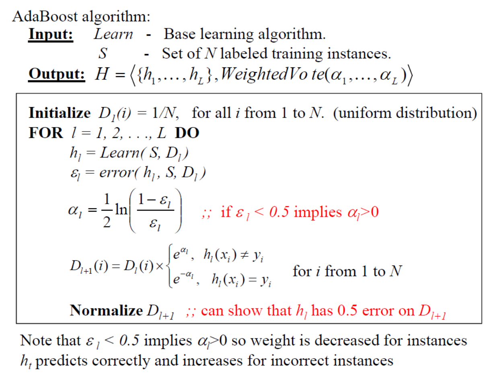

Ensemble method
Ensemble methods use multiple learning algorithms to obtain better predictive performance than could be obtained from any of the constituent learning algorithms. We use different learning sets and/or learning algorithms to make better performance. There have been a wide range of methods developed. We will discuss some popular approaches: bagging (and Random Forest, a variant that builds de-correlated trees) and boosting. Both methods take a single (base) learning algorithm (learner) and generate ensembles.Bagging
Given training set S, bagging works as follows:- Create T bootstrap samples ${S_1, \ldots, S_T}$ of $S$ as follows:
- For each $S_i$: Randomly drawing $|S|$ examples from S with replacement
- Note: with large $|S|$, each $S_i$ will contain $1 - \frac{1}{e} \approx 63.2\% $ unique examples
- For each $i = 1, \ldots, T$ compute $h_i = Learn(S_i)$
- Output $H = <{h_1, \ldots, h_T}, \text{majority Vote}>$
Next we discuss the stability of Learner. A learning algorithm is unstable if small changes in the training data can produce large changes in the output hypothesis or high variance, otherwise stable. Bagging will have little benefit when used with stable learning algorithms (i.e, most ensemble members will be very similar). Bagging generally works best when used with unstable yet relatively accurate base learners (or high variance and low bias classifiers). We usually use Bagging with Decision Tree because it is a high variance algorithm, especially Decision Stump (a tree with a singular node). Another example of high variance learner is high order polynomial linear regression....
Random Forest
Random Forest is an extension of bagging. It builds an ensemble of de-correlated decision trees. It is one of the most successful classifiers in current practice because it is very fast, easy to train and there are many good implements available. Each bootstrapped sample is used to build a tree. When building the tree, each node only chooses from $m < M$ randomly sampled features. In other words, it combines "bagging" idea and random selection of features. Gini index is used to select the test just like in C4.5.
To read more about Random Forest, you can look at http://www?stat.stanford.edu/~hastie/Papers/ESLII.pdf. There is also available package at here: http://www.stat.berkeley.edu/~breiman/RandomForests/cc_home.htm
Boosting
With bagging: individual classifiers were independently learned.
However, with Boosting, it looks at errors from
previous classifiers to decide what to focus
on for the next iteration over data. A successive classifier depends
on its predecessors. Thus, it puts more weights on 'hard' examples.
One popular boosting algorithm that shows highly effectiveness (very
often they outperform ensembles produced by bagging) is AdaBoost.
AdaBoost works by invoking Learn many times on different distributions over the training data set. So we need to modify base learner protocol to accept a training set distribution as an input. It indicates the base learner the importance of correctly classifying the $i$'th training instance. AdaBoost performs $L$ boosting rounds, the operations in each boosting round $l$ are:
- Call Learn on data set $S$ with distribution $D_l$ to produce $l^{th}$ ensemble member $h_l$, where $D_l$ is the distribution of round $l$.
- Compute the $(l + 1)^{th}$ round distribution $D_{l+1}$ by putting more weight on instances that $h_l$ makes mistakes on.
- Compute a voting weight $\alpha_l$ for $h_l$.
- Output the ensemble hypothesis is: $H = <{h_1, \ldots, h_L}, \text{weighted Vote}(\alpha_1,\ldots, \alpha_L)>$
We have the following detailed AdaBoost algorithm:
It is often straightforward to convert a base learner to take into account an input distribution $D$. When it's not straightforward, we can resample the training data according to $D$. Here are some interesting facts about Boosting. Training error goes to zero exponential fast. Boosting drives training error to zero, but it will not overfit because boosting is often robust to overfitting (but not always). Test error continues to decrease even after training error goes to zero because Adaboost adds more classi?ers into our ensemble, the training examples are getting larger margin (more confidence), thus improving the performance of the ensemble on the test data. In the order hand, boosting also has some pitfalls. It is sensitive to noise and outliers. If the number of outliers is small number, they can help to identify them. However, too many outliers can degrade classification performance (boosting might end up putting more and more weight on noise examples) and dramatically increase the time to converge. This phenomenon does not happen in Bagging because the noise does not get amplified and it could even be removed in boost-strap sampling procedure.
We conclude the Ensemble method with the comparing properties between Bagging and Boosting:
To this point, we complete all discussions about ensemble method as well as classification problem and supervised learning. In the next section, I will talk about clustering problem.
Clustering
Introduction
In unsupervised learning, there are many tasks like grouping of clusters in the data, low dimensional... And the most important form in Unsupervised Learning is Clustering. Clustering is the process of grouping a set of objects into classes of similar objects with high intra-class similarity and low inter-class similarity. For example, find genes that are similar in their functions, group documents based on topics and so on. An important aspect in clustering is how we estimate the "similarity/distance" and what types of clustering.
First, the similarity is a philosophical question, so it depends on representation and algorithm. For many algorithms, we usually use the term of distance (rather than similarity) between vectors. To measure distance, there are many ways, one way is using Minkowski Metric:

Another way is using Hamming Distance and Mahalanobis distance as follow:
Or we can directly define similarity by using cosine similarities or kernels:
Next, we talk about types of clustering algorithms. There are 2 main types: Hierarchical algorithms and Partition algorithms. With Hierarchical algorithm, we have 2 approaches: Bottom up (agglomerative) and top down (divisive). We will discuss more bottom up approach. In Partition algorithms, we have 3 main algorithm, those are K-means, Mixture of Gaussian (GMM) and Spectral Clustering.
Hierarchical Agglomerative Clustering (HAC)
HAC starts with each object in a separate cluster and repeatedly joins the closest pair of clusters until there is only one cluster. So how we define the closest pair of clusters, there are 4 types: Single-link, complete-link, centroid and average-link as described follow (table is taken from Wikipedia: https://en.wikipedia.org/wiki/Hierarchical_clustering
| Names | Formula |
|---|---|
| Maximum or complete-linkage clustering |  |
| Minimum or single-linkage clustering |  |
| Mean or average linkage clustering, or UPGMA |  |
| Centroid linkage clustering, or UPGMC |  where where  and and  are
the centroids of clusters s and t,
respectively. are
the centroids of clusters s and t,
respectively. |
Here is an example of single-linkage clustering and complete-linkage clustering respectively:
To visualize the result of HAC, we use Dendrogram. The height of the joint = the distance between two merge clusters. The merge distance monotonically increases as we merge more and more for single, complete and average linkage methods, but not for the centroid method. We can use Dendrogram to identify the number of clusters in data and well-formed clusters. Bellow is Dendrogram of single and complete linkage method.
Given a data set of $n$ points, we know that there are $k$ clusters in the data. In general, there are $O(k^n)$ ways to partition the data, but how we decide which is better? One intuition says that we want tight clusters. This leads to the following objective function
\[\sum_{i = 1}^{k}{\sum_{x \in C_i}{|x - \mu_i|^2}}\]
It is the squared distance between data point $x$ and its cluster center.
K-Means
Below is the k-means algorithm. We will analyze the running time of this algorithm. At each iteration, we reassigning clusters: $O(kn)$ distance computations and we computing the centroids of each cluster: $O(n)$. We assume these two steps are each done once for $l$ iterations: $O(lkn)$. It is a linear in all relevant factors, assuming a fixed number $l$ of iterations and $k$ number of clusters, it is more efficient than $O(n^2)$ of HAC.
Furthermore, k-means is guaranteed to converge because it takes an alternating optimization approach, each step is guaranteed to decrease the objective function. This is a very interesting characteristics of k-means. However, it is highly sensitive to the initial seeds. So it needs multiple random trials: choose the one with the best sum of squared loss. Besides, K-means is exhaustive, because it clusters every point, no notion of the outlier. So noise and outliers will cause problems because they will become singular clusters and bias the centroid estimation. K-means also has drawbacks that data point is deterministically assigned to one and only one cluster, but in reality, clusters may overlap. So we need another 'soft-clustering' algorithm that data points are assigned to clusters with certain probabilities called "Gaussian Mixture Model"
Gaussian Mixture Model (GMM)
As we discussed in Gaussian Discriminative Analysis. Given a set of $x$'s, estimate ${\alpha_1, \ldots, \alpha_k, \theta_1, \ldots, \theta_k}$. Once the model is identified, we can compute $p(y=i|x)$ for $i = 1,\ldots, k$.
However, when we use MLE to maximize the term: $\arg \max \limits_{\theta} \prod_j P(x^j)$. We meet the log of sum, and it is difficult to optimize! We can use gradient ascent, but is very inefficient as follow:
To deal with this problem, we introduce new optimize method called Expectation Maximization (EM). EM is a highly used approach for dealing with hidden (missing) data, here are the cluster labels. The much simpler than gradient methods. It is an iterative algorithm that starts with some initial guess of the model parameters. And it iteratively performs two linked steps:
- Expectation (E-step): given current model parameter $\lambda_t$, compute the expectation for hidden (missing) data.
- Maximization (M-step): re-estimate the parameters $\lambda_{t+1}$, assuming that the expected values computed in the E-step are the true values.
Now, we apply EM in GMM in simple case and general Gaussian:
We have some interesting points about EM to discuss. Like K-means, it is guaranteed to converge because $P(x|\theta)$ must increase or remain the same between iterations. It bases on Optimization transfer for MLE with latent data. In practice, it may converge slowly, one can stop early if the change in log-likelihood is smaller than a threshold. However, it may converge to a local optimum as well. So it needs multiple restarts.
Spectral Clustering
Back to K-means, we have discussed that K-means is highly sensitive to initial starts. So how we choose the best initial for k-means. One approach is Spectral Clustering. We can represent data points as the vertices $V$ of a graph $G$. Vertices are connected by edges $E$. Edges have weights described by matrix $W$. Large weight $W(i,j)$ means that the points $i$ and $j$ are very similar; otherwise, small weights imply dissimilarity. To calculate the similarity between objects, we use a Gaussian Kernel:\[W(i,j) = exp \frac{-|x_i - x_j|^2}{\sigma^2}\]
We define some necessary terms in graph:
- Degree of nodes: $d_i = \sum_{j}{w_{i,j}}$
- Volume of a set: $vol(A) = \sum_{j \in A} d_i, A \subseteq V$
- Cut(A,B): sum of the weights of the set of edges that connect the two groups: $cut(A,b) = \sum_{i \in A, j \in B}w_{ij}$.
- Mincut: minimize weight of connections between group: $\min \limits_{A \cap B = \emptyset, A \cup B = V} Cut(A,B)$. However we prefer more balance partitions, so we need normalized Cut
- Normalized Cut: $Ncut(A,B) = \frac{cut(A,B)}{Vol(A)} + \frac{cut(A,B)}{Vol(B)} = cut(A,B) \frac{Vol(A) + Vol(B)}{Vol(A)Vol(B)}$. We get maximized when Vol(A) and Vol(B) are equal thus it encourages balanced cut.
- Diagonal Matrix $D(i,i) = d_i$
With necessary terms, we now have the spectral clustering algorithm by Ng, Jordan, and Weiss 2001):
Model selection
As we have discussed so far about Clustering, one important point that all algorithms have to deal with is finding the best $k$ clusters to give the best results. It is called Model Selection in Unsupervised Learning. So we will talk about this problem in this section.
As you know, each choice of $k$ corresponds to a different statistical model for the data. Model selection searches for a model (a choice of $k$) that gives us the best fit of the training data. We have many approaches: heuristic, penalty, cross-validation and stability based methods.
With the heuristic method, we plot the sum of squared error for different $k$ values. SSE will monotonically decrease as we increase $k$. We pay attention to knee points because it suggests possible candidates for $k$.
With Cross-validation method, the likelihood of the training data will always increase as we increase $k$. so we use cross-validation as follow:
- For each fold, learn the GMM model using the training data
- Compute the log-likelihood of the learned model on the remaining fold as test data.
With Stability Based methods, Stability is defined as repeatedly produce similar clustering on data originating from the same source. So high level of agreement among a set of clusterings => the clustering model $k$ is appropriate for the data. We evaluate multiple models and select the model resulting in the highest level of stability. We have 2 main algorithms in stability method.

Model Evaluation
Unlike supervised learning, we have class label, and we can directly compute the accuracy of testing data, in unsupervised learning, we don't have these label so we have different measurements called Internal Criterion and External Criterion. With Internal criterion, a good clustering will produce high quality clusters if it has high intra-cluster similarity and low inter-cluster similarity. But good scores on an internal criterion do not necessarily translate into good effectiveness in an application. An alternative to internal criteria is direct evaluation in the application of interest. So we need an external criterion. Rand Index, Normalized Rand Index are used when we know the ground truth, and Purity and Normalized Mutual Information are used when we do not know the ground truth.
Suppose we have the true class labels (ground truth) are known, the validity of clustering can be verified by comparing the class labels and clustering labels.
To compute purity, each cluster is assigned to the class which is most frequent in the cluster, and then the accuracy of this assignment is measured by counting the number of correctly assigned documents and dividing by $N$. Formally:
\[purity(\Omega, \mathbb{C}) = \frac{1}{N}\sum_{k}{\omega_k \cap c_j}\]

A measure that allows us to make this tradeoff is normalized mutual information or NMI. The value of NMI is always between 0 and 1.
\[NMI(\Omega , \mathbb{C}) = \frac{I(\Omega ; \mathbb{C})}{[H(\Omega)+H(\mathbb{C})]/2}\]
where:
\[H(\Omega) = - \sum_{k}P(\omega_k) log P(\omega_k)) = -\sum_{k}\frac{|\omega_k|}{N} log \frac{|\omega_k|}{N}\]
\[ I( \Omega ; \mathbb{C}) = \sum_k \sum_j P(\omega_k \cap c_j) \log \frac{P(\omega_k \cap c_j)}{P(\omega_k)P(c_j)} = \sum_k \sum_j \frac{\vert\omega_k \cap c_j\vert}{N} \log \frac{N\vert\omega_k \cap c_j\vert}{\vert\omega_k\vert\vert c_j\vert}\]
where $P(\omega_k), P(c_j), P(\omega_k \cap c_j)$ are the probabilities of a document being in cluster $\omega_k$, class $c_j$, and in the intersection of $\omega_k$ and $c_j$, respectively.
http://nlp.stanford.edu/IR-book/html/htmledition/evaluation-of-clustering-1.html
We complete the clustering problem also complete the section 3 of our series in "Introduction to Machine Learning". In the next and the last section, we will discuss the Dimension reduction and some important theories in Machine Learning and especially the final suggestion and conclusion on how to use Machine Learning models.